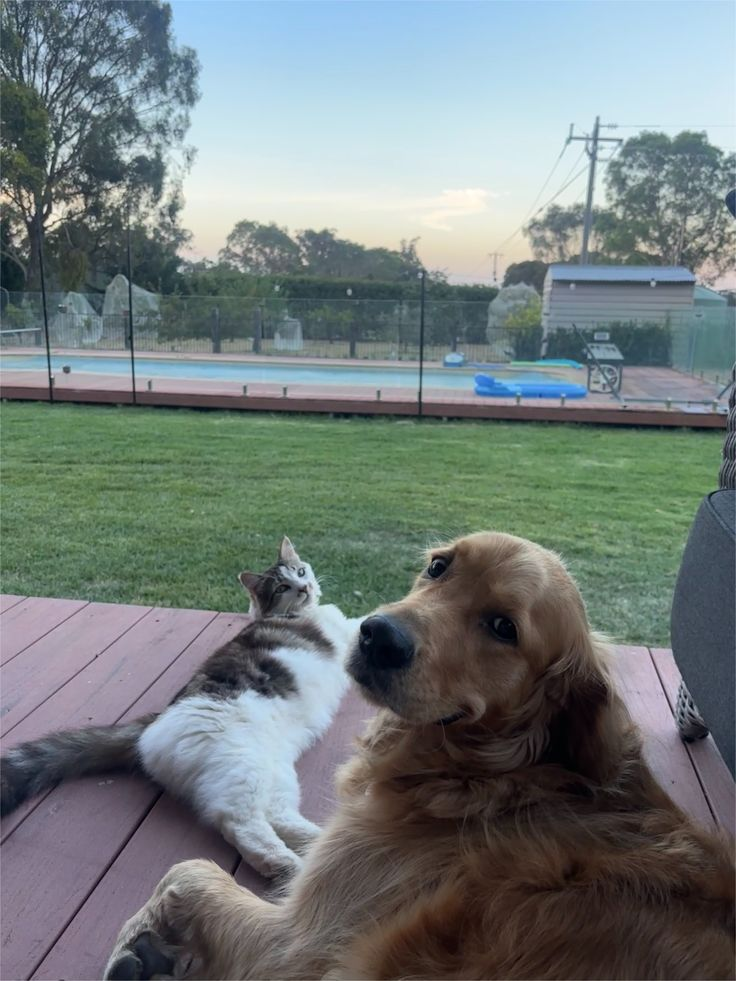
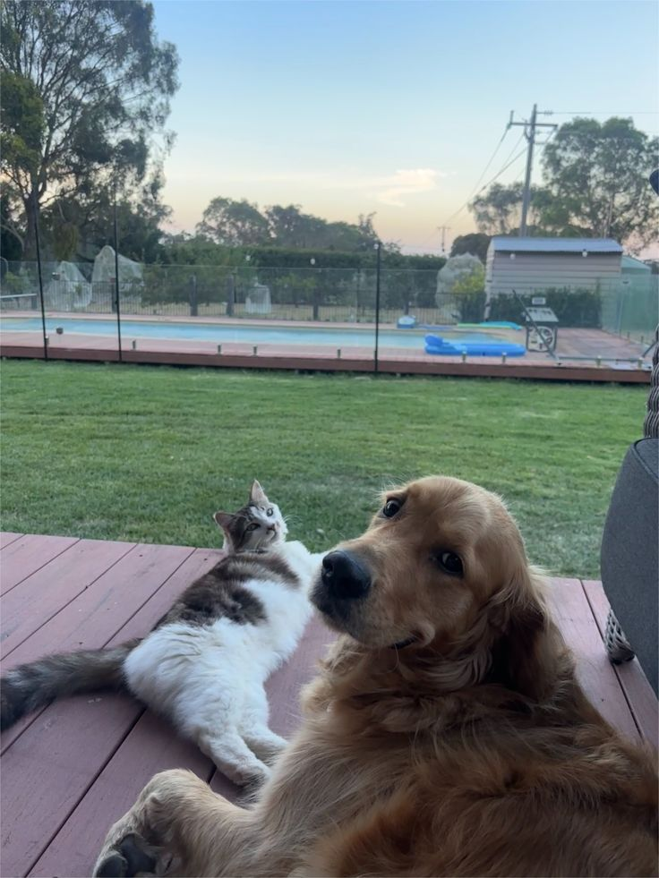

How to Use TailFriend
Follow these steps to navigate our site and get help for a stray animal:
- Step 1: Click Find clinic in the navigation bar to locate nearby vets and shelters.
- Step 2: Enter your address or allow location access when prompted.
- Step 3: Press Search to display a list of available clinics and shelters.
- Step 4: Review the results and click on a card to see details like address, hours, and reviews.
- Step 5: Click Get Directions to open the route on your map application.
- Step 6: If you need to book an appointment, click Book Now and fill out the simple form.
- Step 7: To view animals available for adoption, go to Rescued animals and browse profiles.
- Step 8: Click Apply to Adopt on a pet you like and submit your application.
- Step 9: For additional services, click Vet services to request teleconsultations or prescription refills.
- Step 10: Use the chat icon at the bottom right to contact support if you have any questions.
 
